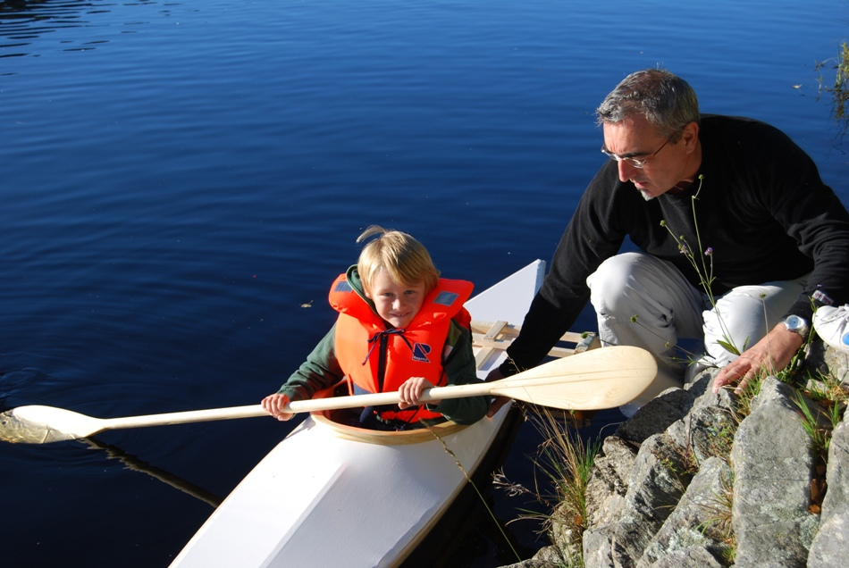

| Sea Flea 11 by Stein Robert Nesse (NO) | Menu Previous Page Next Page |
|

Jonas and his grandfather Stein Robert Nesse prepare the Sea Flea for it's maiden voyage. The frame is norwegian pine. The coaming is made of 5 layers of 5mm pine soaked in boiling water before being curved - then laminated with epoxy and coated with 5 layers of varnish. It`s attached to the hull using sikaflex and stainless-steel-screws. Cross sections and stems are made of 12mm plywood. The skin is made of a stretch-fabric, 94% polyester and 6% elastan, coated with 5 layers of polyurethane enamel paint.
|
|